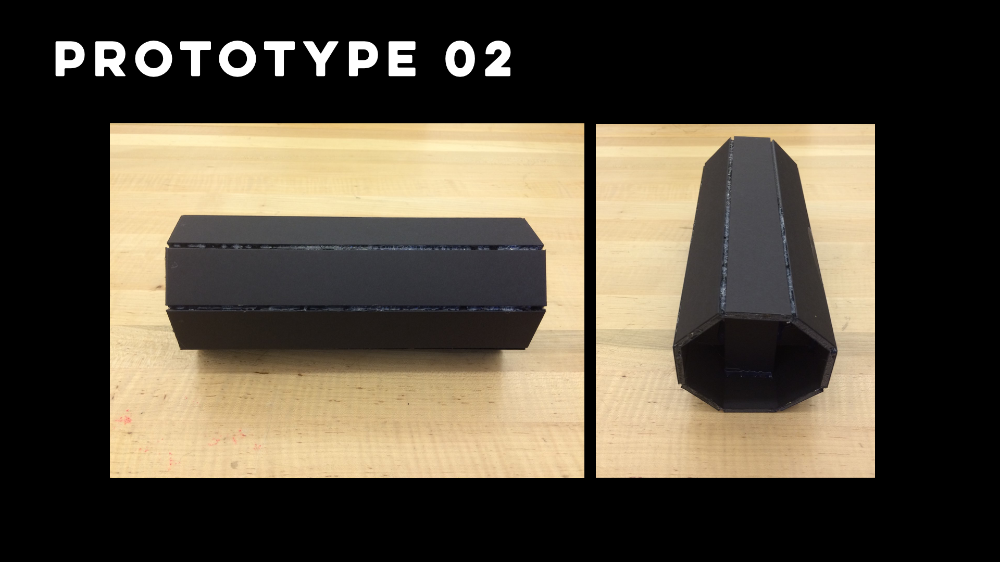
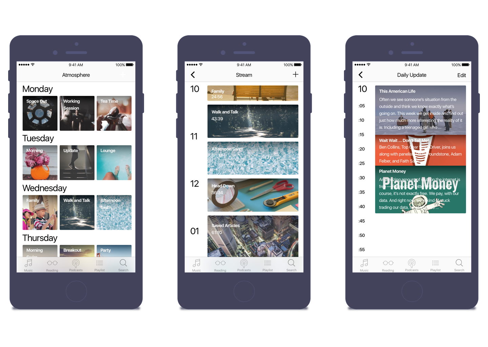

“Extend radio culture back to its personal, intimate, & cultural roots of storytelling.”
RESEARCH
Radio today has shifted dramatically from what it once was. In the beginning radio was purely meant to be used as a communication tool. From there it evolved into one of the main ways we listened to music and learned about the news as families would gather around to listen. Once radio was replaced by the television, it found a new home in our cars and for a brief time even on our phones. Since then, radio has taken many forms, including apps for public radio stations, billboard chart lists, YouTube shows and Podcasts. Today, radio is in the midst of rebranding its identity. Given the expansion of radio in multiple forms, I wanted to explore what it would mean to (re)personalize the radio while taking it back to its roots of storytelling in a communal setting.
LEARNINGS
Media - Media should manage itself; you should not be managed by media. Form - The content should be customized for the end user. The Broadcast - The speaker should require so little interaction that it operates independently. The Object - The object should reflect the personality of the individual but not distract from the content.
PROTOTYPING
PROTOTYPE 01
The first iteration focused on creating a form which was mobile enough that you could take it to a room for a party but large enough that it was not practical to take out of a house. The end shape was too cumbersome to reflect the main control mechanism to rotate the device in order to change broadcasts.
PROTOTYPE 02

The second iteration was primarily an exploration of form in which the device could comfortably be rotated with one hand.
PROTOTYPE 03

Prototype number 3 was another refinement of the physical volume of the device as well as determining the proper weight and textures to refine the control mechanisms.
Screens
Updated post project.

NEXT STEPS
- Explore a wider variation of forms.
- Complete a deep dive into a second round of research specifically on how people consume audio based media content.
- Investigate how communal conversation can be generated around the syncing of the broadcasting of the device among multiple users or by altering the methods of content distribution.
CREDITS
For: IXDSN-320-01 | Time Studio 2: Behavior
Project Date: Fall 2014
Project Length: 4 Weeks
Team: Solo Project